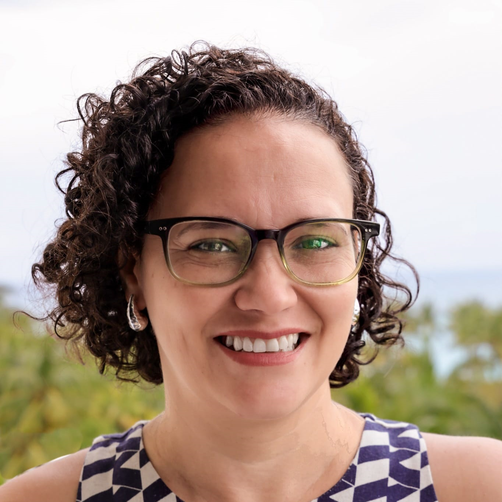
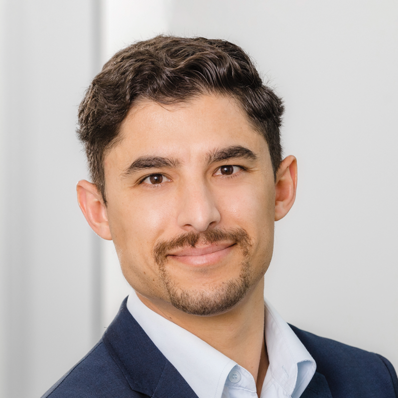
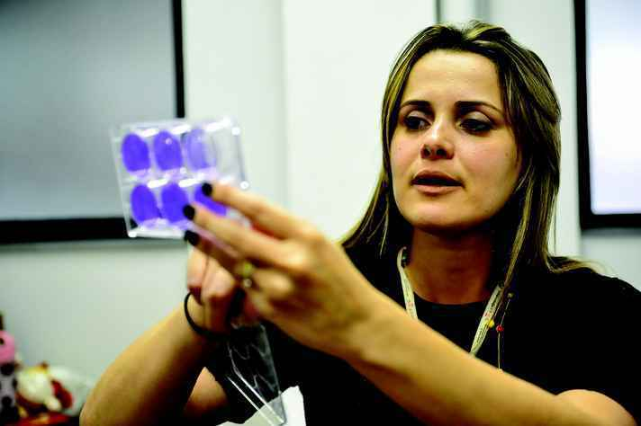

Aline Silva de Miranda, PhD
Professor/Researcher at the Department of Morphology, Federal University of Minas Gerais-UFMG, Brazil. She has experience in the areas of behavioral and cognitive neuroscience and experimental and clinical neuroimmunology, focusing on traumatic brain injury and neurodegenerative diseases, especially Parkinson's disease, having published over 100 papers in relevant scientific journals. She recently (2025) joined the central committee of PNIRS Ibero-America and, together with the team, has been dedicated to promoting advances in the field of psychoneuroimmunology, particularly in Ibero-American regions.
Ana Rosa Perez, PhD
Researcher/Professor at the Faculty of Medical Sciences of the National University of Rosario, Argentina. Currently director of the Institute of Clinical and Experimental Immunology of Rosario (IDICER CONICET UNR). Extensive experience in the field of Immunoendocrinology, with a focus on Chagas disease.

Antônio Lúcio Teixeira, MD, PhD
Neurologist, psychiatrist, and researcher at the University of Texas Health Science Center at San Antonio, TX, USA. Has expertise in cognitive and behavioral neurology, geriatric psychiatry, and neuroimmunology, having published over 900 articles in relevant scientific journals.

Daniela Caldeira Costa Calsavara, PhD
Professor/Researcher at the Department of Biological Sciences, Federal University of Ouro Preto-UFOP, Brazil. She is the lead researcher of the CNPq research group entitled "Study of immunometabolic alterations induced by bioactive compounds, phytotherapeutics and drugs in experimental models of metabolic, infectious diseases and aggravations".
Eliana Cristina de Brito Toscano, PhD
Professor/Researcher at the Faculty of Medicine of the Federal University of Juiz de Fora (UFJF), Brazil. She is the lead researcher of the Translational Neuroimmunology group at CNPq and has experience in the study of immune/inflammatory processes involved in neurological and neurodegenerative diseases, focusing on epilepsy and Alzheimer's disease, respectively.

Elisa Caetano-Silva, PhD
Researcher at the University of Illinois at Urbana-Champaign (USA). Her research focuses on the gut–brain axis, integrating the intestinal microbiota and the immune system. She investigates in particular the effects of aging, psychological stress, and dietary factors on intestinal inflammation and on the mechanisms of communication between the gut and the brain. She is a member of the Brazilian Society for Neuroscience and Behavior (SBNeC) and the Psychoneuroimmunology Research Society (PNIRS), and a co-founder and co-chair of PNIRS Ibero-America, contributing to the strengthening of psychoneuroimmunology and the scientific network in the Ibero-American region.

Érica Leandro Marciano Vieira, PhD
PResearcher at the Centre for Addiction and Mental Health (CAMH) and the Department of Psychiatry at the University of Toronto, Canada. She has dedicated herself to investigating the role of peripheral biomarkers and extracellular vesicles in neurodegenerative disorders, mood disorders, and cognitive dysfunction, having published more than 145 papers in relevant scientific journals in the field.

George Eduardo Gabriel Kluck, PhD
Professor/Researcher at the Department of Morphology, Federal University of Minas Gerais (UFMG), Brazil. Has experience in the area of lipid metabolism and cell signaling in infectious and neurodegenerative diseases.

Hugo Pellufo, PhD
Leader of the Neuroimmune Interactions group at the Faculty of Medicine, University of Barcelona. His research focuses on the biology of glial cells, immune receptors, and neuroinflammation, especially the role of microglia/macrophage lipid immune receptors. With experience at the University of the Republic, the Institut Pasteur de Montevideo, and the Autonomous University of Barcelona, he investigates how these receptors regulate inflammation, immunometabolism, and synaptic pruning in neurodegenerative diseases.

Lício Velloso, PhD
Dr. Licio Velloso is a Brazilian physician-scientist whose research focuses on the role of neuroinflammation and hypothalamic signaling in metabolic disorders such as obesity and diabetes.

Lucas Secchim Ribeiro, PhD
Immunologist at the German Center for Neurodegenerative Diseases (DZNE) in the city of Bonn, Germany. He bridges solid expertise in wet-lab molecular biology techniques with novel bioinformatics and data science skills. He represents the Swarm Learning Hub, whose objective is the development of secure, privacy-preserving networks for clinical research.
Luciana Estefani Drumond de Carvalho, PhD
Researcher in the Multicenter Graduate Program in Biochemistry and Molecular Biology at the Federal University of São João Del Rei (UFSJ), Brazil. Her work focuses on the identification and characterization of cardiotonic steroid derivatives with therapeutic potential, evaluated in experimental models of epilepsy, stroke, and neuroinflammation, among other neurological conditions.

Melissa Rosenkranz, PhD
Dr. Melissa Rosenkranz holds the Distinguished Chair in Contemplative Neuroscience at the Center for Healthy Minds and is an Associate Professor in the Department of Psychiatry at the UW–Madison School of Medicine and Public Health. Her research is focused on understanding the biology that underlies the mind-brain-body interactions through which stress, emotion, and the immune system interact. She uses a wide range of brain imaging and biomolecular tools in her work. Contemplative interventions are an important aspect of this work, where the neural processing of stress and emotion are examined as modifiable targets for treatment of chronic inflammation. In recent work, Melissa addresses questions related to the impact of chronic, systemic inflammation on brain health, neuroinflammation, long-term cognitive function, and risk for the development of Alzheimer’s disease.

Moisés Evandro Bauer, PhD
Full Professor of Immunology at the School of Health and Life Sciences (PUCRS). Researcher at the Immunobiology Laboratory (PUCRS) and the National Institute of Science and Technology in Neuroimmunomodulation (INCT-NIM). He has extensive experience in the areas of Neuroimmunology and Immunosenescence, focusing on the psychoneuroendocrine mechanisms of premature aging of the immune system in various human populations, including healthy elderly individuals, patients with neuropsychiatric disorders, and patients with autoimmune diseases.

Natalia Pessoa Rocha, PhD
Assistant Professor at the University of Texas Health Science Center at Houston, TX, USA. She has experience studying immunological/inflammatory parameters associated with the pathophysiology of Huntington's disease and other neurodegenerative diseases, having published over 90 papers in relevant scientific journals in the field.

Prof. Dr. Nicolas Rohleder
Full Professor of Health Psychology at Friedrich-Alexander-Universität Erlangen-Nürnberg (Germany) and Associate Research Professor at Brandeis University. His research focuses on the psychobiological mechanisms that connect stress and inflammation. With extensive experience in psychoneuroendocrinology, he has received awards such as the Herbert Weiner Early Career Award from the American Psychosomatic Society.

Ruth Barrientos, PhD
Associate Professor in the Department of Psychiatry and Behavioral Health at the Behavioral Medicine Research Institute, The Ohio State University. Member of the PNIRS Ibero-America committee and president-elect of PNIRS for the coming year. A behavioral neuroscientist, her research examines the impact of inflammation on cognitive deficits, especially in aging and neurodegenerative diseases. Her goal is to develop interventions to prevent and reverse memory declines associated with neuroinflammatory triggers.

Vivian Vasconcelos Costa, PhD
Professor/Researcher at the Department of Morphology, Federal University of Minas Gerais (UFMG), Brazil. Member of the Brazilian Academy of Sciences since 2021, she has experience in developing different platforms, including humanized models, to study the pathogenesis and test innovative therapies focused on infectious diseases, especially viral ones.

Wilson Savino, PhD
Senior Researcher at the Oswaldo Cruz Foundation (Fiocruz-RJ). Coordinator of the National Institute of Science and Technology (INCT) in Neuroimmunomodulation for the Ministry of Science and Technology, of the FAPERJ network in Neuroinflammation, of the INOVA-IOC network in Neuroimmunomodulation, and coordinator for Brazil of the Research, Biotechnology and Education Network applied to Health (FOCEM/MercoSul).
Yuliya Nikolova, PhD
Scientist in the Neurobiology of Depression and Aging Program at the Centre for Addiction and Mental Health (CAMH) and an assistant professor in the Department of Psychiatry at the University of Toronto. Dr. Nikolova’s work combines tools from experimental psychology, cognitive science, neuroimaging and genetics to study mechanisms of risk for mental illness.